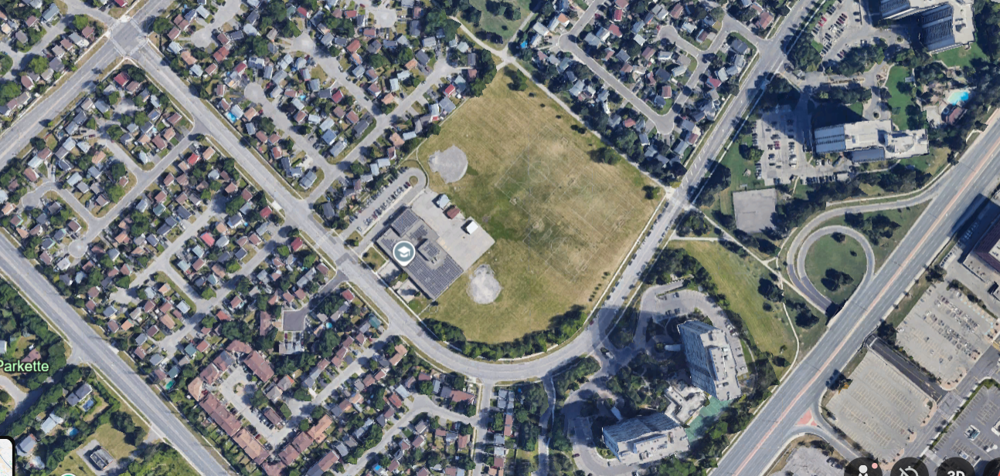

LENS 01 // SPATIAL ANTAGONISM
The Blind Curve
Hanover Public School features a geometric anomaly: a sharp, blind curve immediately preceding the crosswalk. This represents a failure of street design where geometry actively obscures children from driver view.
OBSERVATION LOG [Feb 12]:
Drivers approaching Hanover maintain speeds of 40-44km/h despite the "School Zone" signage. The curve geometry naturally restricts visibility to approx 25m. When combined with the reaction time formula, a driver at this speed requires 26m to stop safely. The road design creates a "Death Zone" where physics makes mechanical stopping impossible before impact.
Drivers approaching Hanover maintain speeds of 40-44km/h despite the "School Zone" signage. The curve geometry naturally restricts visibility to approx 25m. When combined with the reaction time formula, a driver at this speed requires 26m to stop safely. The road design creates a "Death Zone" where physics makes mechanical stopping impossible before impact.


TECHNICAL SPECIFICATIONSLOC: HANOVER RD
SPEED LIMIT40 km/h (Posted)
OBSERVED SPEED44 km/h (Avg)
REACTION TIME1.5 Seconds (Winter)
STOPPING DIST.26.0 Meters
PHYSICS BREAKDOWN: STOPPING VS. VISIBILITY
▲ BLIND SPOT BEGINS